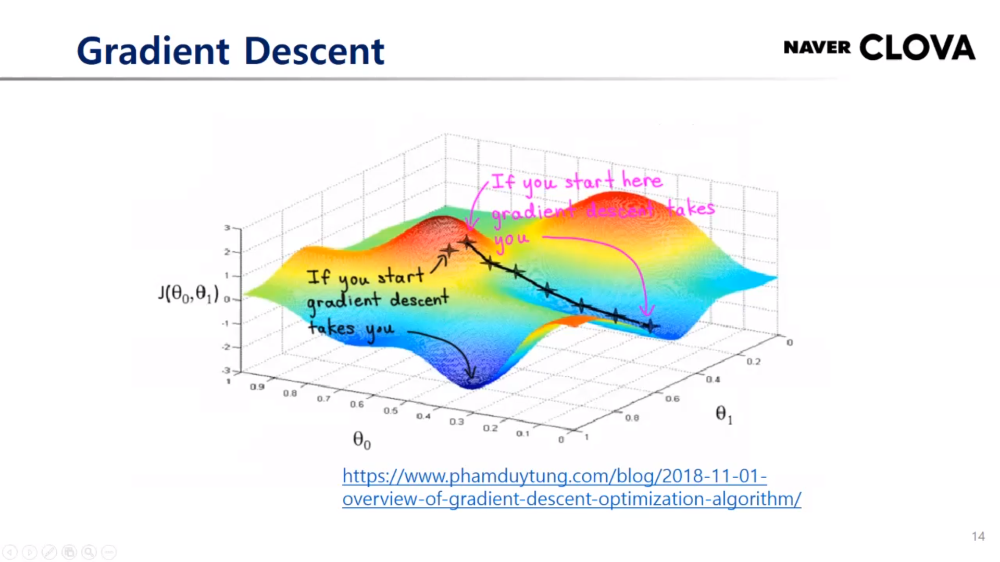
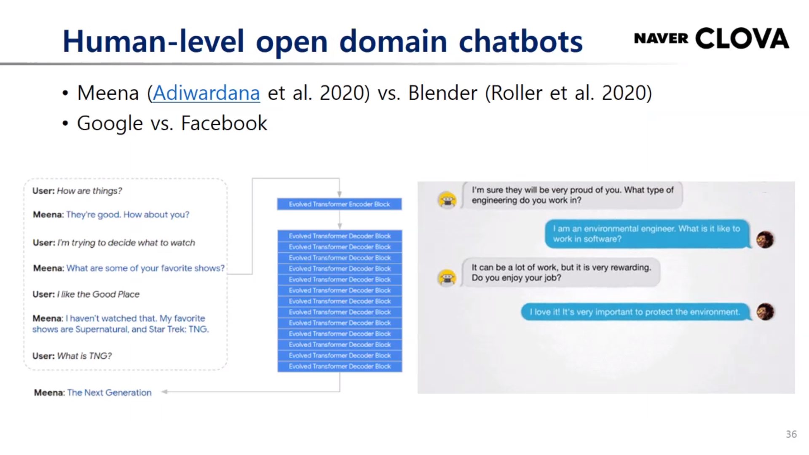

딥러닝 개요와 최신 연구 트렌드 그리고 네이버 클로바 AI
하정우 팀장님
앨런 튜링
현재의 AI
GauGAN (Nvidia)
AlphaGo (2016) -> AlphaFold (2018) -> AlphaStar (2019)
퍼셉트론
여러가지 인풋들이 주어지고 vias라는 텀이 주어짐
가중치 주어짐
스텝 펑션 통과해서 특정값보다 크면 1 작으면 0 출력
퍼셉트론의 문제는 xor 계산 불가
+와 - 구별 불가 (비선형 분리 불가)
그것을 해결하는 방법이 멀티 레이어 뉴럴 네트워크
기존의 비선형 분리가 안되었던 문제를 해결
오브젝트 펑션과 코스트 펑션
수식 유도 외우기..
Backpropagation : Loss function을 줄이는 방향으로 생각…weight를 조금 바꿨을 때, Loss function이 얼마나 많이 줄게 만들것인가?

Gradient Descent : weight가 아랫 방향으로 가는것
optimum 두 개 있음.
Gradient Descent가 처음 위치 잘못 잡으면 불리해지는 점 개선하기 위해 만든 것이 Stochastic Gradient Descent
보통 이미지 백본을 학습시킬 때에는 SGD 사용
GAN이나 Segmentation이나 Detection에는 Adam 많이 사용
SGD가 파라미터 잡는 것이 민감하고 쉽지 않기 때문.
의미를 가진 개체가 산술 연산 가능
CNN은 주로 이미지 인식 시
RNN : 시퀀스 데이터를 어떻게 잘 학습할 것인가.
파랑 - 인코더, 빨강 - 디코더
층을 늘림
성능 증가
Self-attention : RNN을 모두 대체중인 이 모델은 position encoding 을 함.
long dependency 모델링에 용이
자연어 처리 "attention is all you need"
Variational Autoencoder : encoder 와 decoder 사이에 변화를 넣음. 훨씬 더 안정적임.
GAN : latent vector와 noise를 넣어서 image를 만들어도 원래 이미지와 discriminator가 구별을 못하도록 학습시키자
최근 트렌드 : 큰 모델을 데이터를 엄청 많이 넣어서 엄청 성능이 좋은 모델을 만든 다음 여기저기 사용
Self-supervised : label이 없어도 데이터 안에서 학습을 하는 방법
supervised constrstive : label 정보를 positive pair, nagative pair 만들 때 사용

심심이류의 인공지능
모델 엄청 크고 데이터 많을수록 좋음!
모델링을 해주는 머신러닝 알고리즘
AutoML 을 시용적 관점에서 가장 실용적으로 쓸 수 있는 부분!
이미지 백본 트레이닝에서 regularizer를 잘 활용하는것이 중요
OCR 이용한 Clova 램프 -> 앵간하네
reXNet : 이미지 인식 백본
starGAN : 이미지 소스 하나 추가해주면 그것과 비슷하게 스타일링 해주는 것
데이터 증강 기법
기존에는 classification류 밖에 없었음
clova 더빙
clova speech
LaRva
AI_Call
ClovaCall